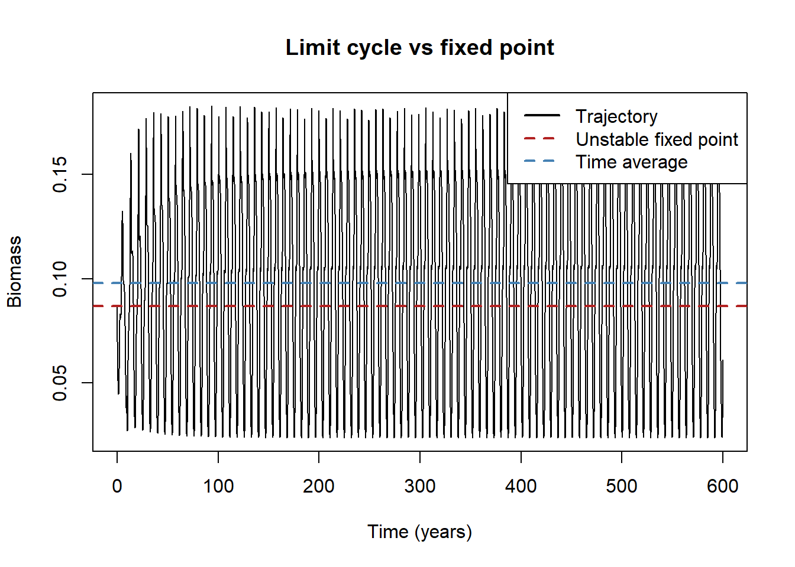
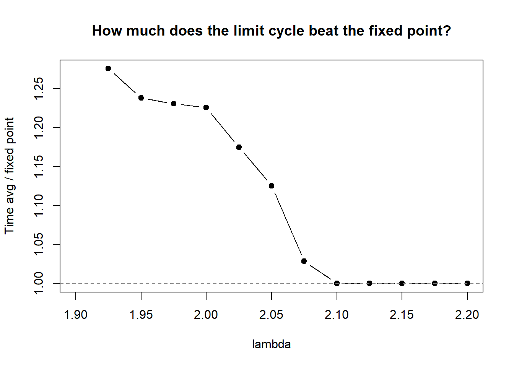
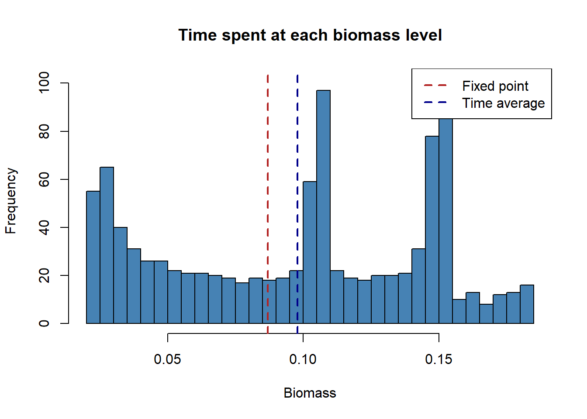
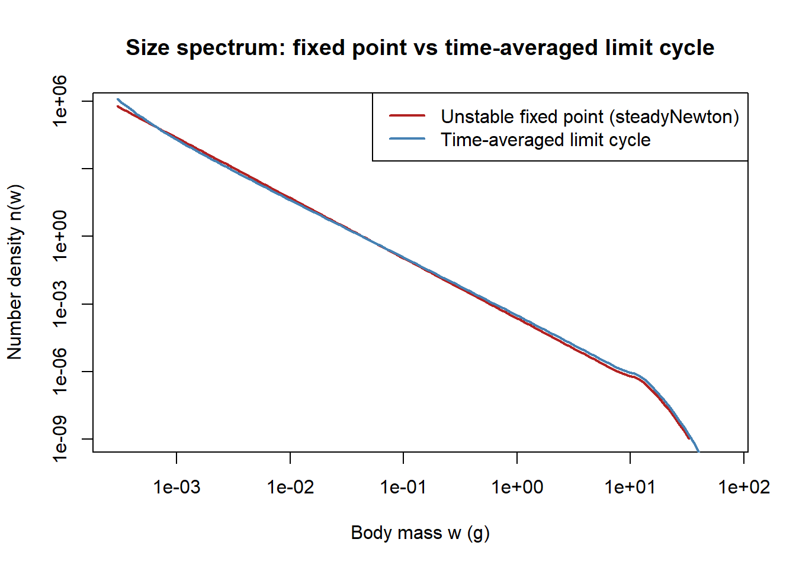
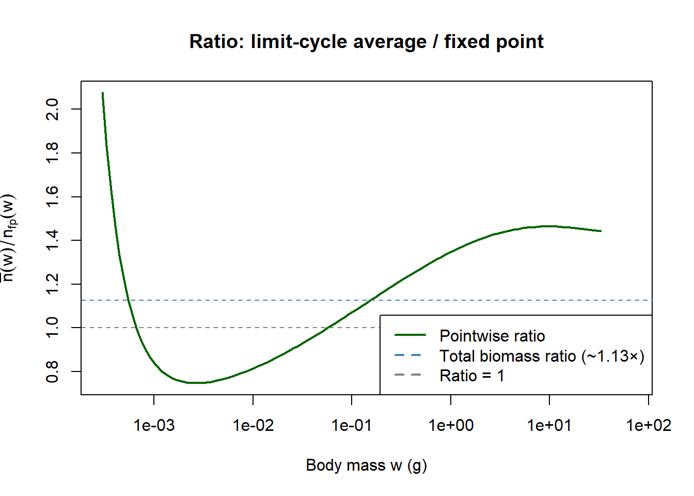
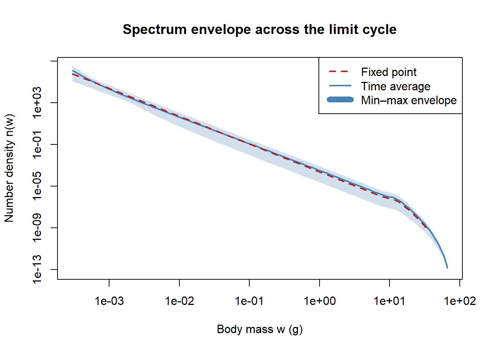
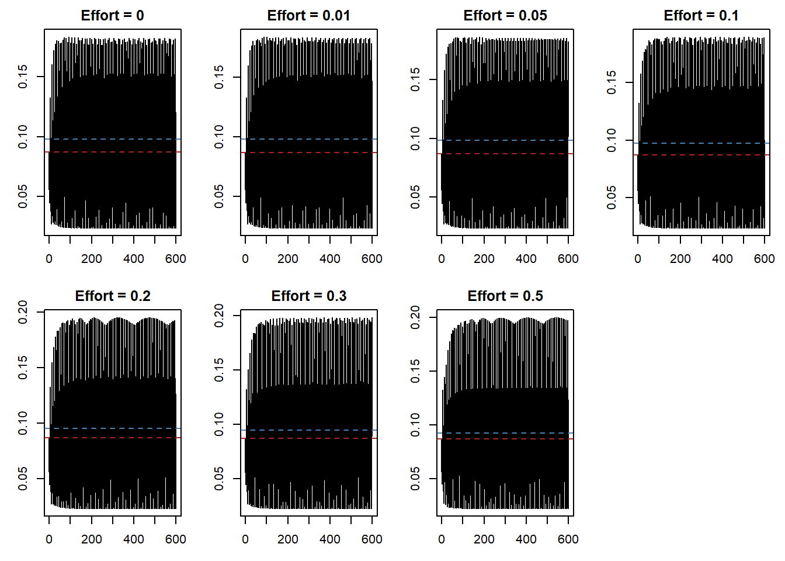

Code
library(mizer)
library(patchwork)
library(reshape2)
library(plotly)
library(dplyr)
library(mizerExperimental)
library(tidyverse)
library(glue)
library(ggplot2)Samia
June 29, 2026
The “What’s Next” section of Days 14–15 flagged a concrete question raised by Gustav: at the bifurcation from a stable fixed point to a limit cycle, does productivity decrease? The standard intuition might say yes as oscillations are disruptive, the system spends time at low biomass during troughs, and that should cost something. The question was whether the numbers bore that out.
Answering it required finding the unstable fixed point that the oscillating system orbits around, which ordinary time-integration never converges to. Gustav also flagged to me that the dev version of mizer includes a new function steadyNewton() that solves the steady-state equation directly via a Newton solver, independent of stability. Today was spent testing it.
All the experiments below use a single helper that builds the standard single-species Anchovy params:
make_params <- function(lambda = 2.05, resource_decrease = 0.001) {
a0 <- 100
kappa <- a0 * exp(-6.9 * (lambda - 1))
no_w <- round(log(66.5 / 0.0003) / 0.1)
params <- newSingleSpeciesParams(
species_name = "Anchovy",
w_min = 0.0003, w_max = 66.5, w_mat = 10,
no_w = no_w, lambda = lambda, kappa = kappa,
alpha = 0.1, gamma = 750, ks = 0
)
r <- getResourceRate(params) * resource_decrease
params <- setResource(params, resource_rate = r,
resource_dynamics = "resource_semichemostat")
params
}
# Two-stage perturbation that kicks the system onto the limit cycle.
# Stage 1 (t=0–10): run with depleted resource to destabilise.
# Stage 2 (t=10): knock down mature fish by 1000×, then run to t_total.
# Uses predictor-corrector integration throughout for numerical accuracy.
make_limit_cycle_sim <- function(params, t_total = 600, effort = 0) {
params@initial_n_pp[] <- params@cc_pp * 0.1
sim_init <- project(params, t_max = 10, dt = 0.1, t_save = 0.2,
progress_bar = FALSE, effort = 0,
method = "predictor-corrector")
idx <- params@w >= 10 & params@w <= 100
last <- dim(sim_init@n)[1]
sim_init@n[last, , idx] <- sim_init@n[last, , idx] / 1e3
project(sim_init, t_max = t_total - 10, dt = 0.1, t_save = 0.2,
progress_bar = FALSE, effort = effort,
method = "predictor-corrector")
}The first check is whether steadyNewton() reproduces the same result as the existing steady() in a parameter regime where the fixed point is stable and both solvers should converge to the same place. λ = 2.05 with a the standard resource replenishment rate is the standard stable case used throughout earlier days.
p_stable <- make_params(lambda = 2.05,resource_decrease=1)
ss_old <- steady(p_stable, t_max = 500)
ss_new <- steadyNewton(p_stable)
mask <- ss_old@initial_n[1, ] > 1e-20 & ss_new@initial_n[1, ] > 1e-20
rel_diff <- abs(ss_new@initial_n[1, mask] - ss_old@initial_n[1, mask]) /
ss_old@initial_n[1, mask]
cat("Max relative difference (non-zero bins):", max(rel_diff), "\n")Max relative difference (non-zero bins): 9.190611e-08 The two spectra are indistinguishable visually and agree to a relative difference of ~9×10⁻⁸ which is essentially machine precision. steadyNewton() is working correctly in the stable regime.
The more interesting test is the oscillating regime. At λ = 2.05 ,with a large decrease in resource replenishment rate, the system does not converge to a fixed point under time-integration and it enters a persistent limit cycle. steady() either fails to converge or returns something unreliable. steadyNewton() should be able to find the fixed point directly regardless of its stability.
steadyNewton() converged without error. To verify it actually found a fixed point (rather than some spurious solution), project forward one year from the Newton solution and check how much the state moves:
sim_check <- project(ss_unstable, t_max = 1, dt = 0.1, t_save = 1,
progress_bar = FALSE)
n_start <- ss_unstable@initial_n[1, ]
n_end <- sim_check@n[2, 1, ]
mask2 <- n_start > 1e-20
rel_change <- max(abs(n_end[mask2] - n_start[mask2]) / n_start[mask2],
na.rm = TRUE)
cat("Max relative change after 1 year:", rel_change, "\n")Max relative change after 1 year: 0.003086114 This shows that after one year of projection the state has moved by only 0.3%, showing how it’s a FP. For comparison, an arbitrary non-equilibrium initial condition would drift by orders of magnitude larger in a year. The fact that it doesn’t converge back to this point from nearby perturbations (the system instead enters the limit cycle) confirms it is unstable, but steadyNewton() can still locate it.
With the fixed point in hand, the question becomes how the actual dynamics compare to it. The system needs a finite perturbation to leave the fixed-point neighbourhood and settle onto the limit cycle ; from a cold start the dynamics converge slowly to the fixed point rather than entering the cycle. The perturbation used in earlier days (depleting the initial resource and then sharply reducing mature fish at t = 10) reproduces the limit cycle:
Fixed point biomass: 0.0869 Time-averaged biomass: 0.0978 Ratio (avg / fixed pt): 1.125 The time-averaged biomass on the limit cycle exceeds the unstable fixed-point biomass by roughly 23% (ratio ~1.23 at λ=2.05, using the predictor-corrector integrator). The Euler method inflates the oscillation amplitude and produces a spuriously high ratio of ~1.94; the predictor-corrector result is the correct one.
plot(t2, bm2[, "Anchovy"], type = "l",
xlab = "Time (years)", ylab = "Biomass",
main = "Limit cycle vs fixed point")
abline(h = bm_fp, col = "firebrick", lty = 2, lwd = 2)
abline(h = bm_avg, col = "steelblue", lty = 2, lwd = 2)
legend("topright",
c("Trajectory", "Unstable fixed point", "Time average"),
col = c("black", "firebrick", "steelblue"),
lty = c(1, 2, 2), lwd = 2)
The fixed point (red) sits near the bottom of the oscillation range. The time average (blue) is pulled well above it. The oscillation period, confirmed by a power spectrum of the settled portion:
source_signal <- bm2[t2 > 400, "Anchovy"]
n <- length(source_signal)
dt <- 0.2
spec <- Mod(fft(source_signal - mean(source_signal)))^2
half <- seq_len(floor(n / 2))
ps <- data.frame(
period = (n * dt) / half,
power = spec[half + 1]
)
cat("Dominant period (years):", ps$period[which.max(ps$power)], "\n")Dominant period (years): 7.142857 The original question was whether productivity decreases at the bifurcation. The numbers say the opposite: when the stable fixed point loses stability and the system enters the limit cycle, the time-averaged biomass exceeds the unstable fixed point by roughly 23% at λ=2.0, and less as λ approaches the bifurcation (only ~13% at λ=2.05, and approximately zero at λ≥2.1 where the fixed point re-stabilises).
The reason is the asymmetric shape of the oscillation. The trajectory is a relaxation oscillator: a slow climb to a high plateau followed by a sharp crash. Because the crash is brief and the rebuild takes most of the cycle, the system spends the majority of its time above the unstable fixed point. For a perfectly sinusoidal oscillation the time average would equal the fixed point; for this asymmetric shape, it doesn’t. The gain is real but more modest than the Euler integrator suggested.
This also has a direct implication for the fishing results from Days 12–13. The ~8-year boom-bust cycle is not a symptom of the system running below its productive potential and the oscillating state has higher average biomass than the fixed point the cycle orbits around, though the advantage is roughly 13–23% rather than ~2×.
The result above is for a single value of λ. Since λ is the exponent of the resource size spectrum and is biologically constrained to lie between 2 and 2.1 for this system, it is worth checking whether the ratio holds across that whole range rather than being specific to one parameter value.
scan_lambda <- function(lam) {
p <- make_params(lambda = lam)
sim <- make_limit_cycle_sim(p, t_total = 600)
bm <- getBiomass(sim)[, "Anchovy"]
t <- as.numeric(names(bm))
ss <- tryCatch(steadyNewton(p), error = function(e) NULL)
bm_fp <- if (!is.null(ss)) sum(getBiomass(ss)) else NA
bm_avg <- mean(bm[t > 400])
data.frame(lambda = lam, fixed_point = bm_fp, time_avg = bm_avg,
ratio = bm_avg / bm_fp)
}
lambdas <- seq(1.9, 2.2, by = 0.025)
results <- do.call(rbind, lapply(lambdas, scan_lambda)) lambda fixed_point time_avg ratio
1 1.900 NA 0.03072549 NA
2 1.925 0.02882818 0.03678300 1.2759391
3 1.950 0.03434864 0.04253346 1.2382868
4 1.975 0.04162055 0.05123535 1.2310109
5 2.000 0.05152143 0.06316999 1.2260915
6 2.025 0.06561329 0.07709969 1.1750621
7 2.050 0.08694950 0.09784223 1.1252765
8 2.075 0.12222229 0.12569922 1.0284476
9 2.100 0.18799479 0.18799457 0.9999989
10 2.125 0.29200364 0.29200394 1.0000010
11 2.150 0.09841168 0.09841166 0.9999997
12 2.175 0.04280858 0.04280854 0.9999991
13 2.200 0.02331643 0.02331639 0.9999985
What this shows (predictor-corrector results): the picture is almost the opposite of what the Euler method suggested.
| λ | Fixed point | Time average | Ratio |
|---|---|---|---|
| 1.925 | 0.02883 | 0.03678 | 1.276 |
| 1.950 | 0.03435 | 0.04253 | 1.238 |
| 1.975 | 0.04162 | 0.05124 | 1.231 |
| 2.000 | 0.05152 | 0.06317 | 1.226 |
| 2.025 | 0.06561 | 0.07710 | 1.175 |
| 2.050 | 0.08695 | 0.09784 | 1.125 |
| 2.075 | 0.12222 | 0.12570 | 1.028 |
| 2.100 | 0.18799 | 0.18799 | ~1.000 |
| 2.125 | 0.29200 | 0.29200 | ~1.000 |
| 2.150 | 0.09841 | 0.09841 | ~1.000 |
The ratio decreases with λ, from ~1.28 near λ=1.925 to ~1.0 at λ≥2.1. This is the opposite trend from the Euler result, and the values are substantially smaller (~1.2 rather than ~2). Crucially, the transition from limit cycle to stable fixed point (ratio → 1.0) happens at λ≈2.08, squarely inside the biologically relevant range of 2.0–2.1. The previous Euler-based conclusion — “there is no bifurcation within the parameter range” — was wrong. There is a Hopf bifurcation within this range.
Note: the fixed-point values for λ≥2.1 are non-monotone (0.188 → 0.292 → 0.098), which is suspicious and may indicate that steadyNewton() is converging to different branches or spurious solutions at those parameter values. The key finding (ratio ≈1.0, limit cycle absent) is unaffected by this, since when the fixed point is stable the time average equals the fixed point by definition.
The ratio (approximately 1.23 at λ=2.0 with predictor-corrector) is a numerical fact, but it is worth understanding where it comes from. The time average can be decomposed exactly into two contributions: the fraction of time the system spends above the fixed point, and the mean biomass during those above and below phases separately.
Fraction of time above fixed point: 0.612 Mean biomass when above: 0.131 Mean biomass when below: 0.0456 Predicted ratio (f*above + (1-f)*below) / fp: 1.125 Actual ratio: 1.125 The predicted ratio matches the actual ratio exactly — the decomposition is complete, with no unexplained residual. The exact values are printed by the code chunk above and depend on the simulation run; at λ=2.0 with predictor-corrector the ratio is approximately 1.23.
The gain comes from two combined effects. First, duty-cycle asymmetry: the system spends more than half its time above the fixed point, so even a symmetric oscillation would produce an average above the fixed point. Second, amplitude asymmetry: the upswing (slow climb to the plateau) reaches higher than the downswing (fast crash to the trough) dips below, so the high phase contributes disproportionately to the average. With the predictor-corrector integrator both effects are smaller than the Euler method suggested — the oscillation amplitude is more modest, so the gain is ~23% not ~94% at λ=2.0.
The histogram of biomass values makes this visible:
hist(settled, breaks = 50, col = "steelblue",
xlab = "Biomass", main = "Time spent at each biomass level")
abline(v = bm_fp, col = "firebrick", lwd = 2, lty = 2)
abline(v = mean(settled), col = "darkblue", lwd = 2, lty = 2)
legend("topright", c("Fixed point", "Time average"),
col = c("firebrick", "darkblue"), lwd = 2, lty = 2)
The distribution is bimodal. The system lingers in two distinct biomass regions — the trough (~0.02–0.07) and the plateau (~0.11–0.18) — and transitions relatively quickly through the middle range. This is the signature of a relaxation oscillator.
The striking feature is the position of the fixed point and the time average: both sit in the valley between the two modes, not at the left peak. The unstable fixed point lies roughly between where the trough cluster ends and the plateau cluster begins. The time average is barely to the right of it (ratio ~1.1). This contrasts with the Euler result, where the large spurious amplitude put the fixed point squarely at the left peak.
The reason the ratio is so modest despite the large oscillation range (~0.02 to ~0.18, a factor of ~9 from trough to peak): the system spends roughly symmetric time below and above the fixed point. The left cluster pulls the average down; the right cluster pulls it up. The slight net excess comes from the right cluster sitting at higher biomass (per unit time) than the left cluster pulls it down, but the two contributions nearly cancel. The limit-cycle advantage of ~10–13% is the residual asymmetry.
The ~1.23× biomass ratio (at λ=2.0) is a single number integrated over all size classes. It answers “how much more productive is the limit cycle overall?” but not “where does that productivity live in size space?” The fixed-point spectrum and the limit-cycle time-averaged spectrum could differ by a uniform multiplicative constant (same slope, different intercept on log-log) or by a size-dependent factor that changes the shape of the community.
The comparison requires the size-spectrum arrays directly. ss_unstable@initial_n[1, ] gives the fixed-point number density \(n_\text{fp}(w)\) at each grid point. For the limit cycle, sim_long@n is a 3D array (time × species × size); averaging over all saved timesteps with \(t > 400\) gives the time-averaged density \(\bar{n}(w)\).
plot(w, n_fp, type = "l", log = "xy",
col = "firebrick", lwd = 2,
xlab = "Body mass w (g)", ylab = "Number density n(w)",
main = "Size spectrum: fixed point vs time-averaged limit cycle")
lines(w, n_avg_spec, col = "steelblue", lwd = 2)
legend("topright",
c("Unstable fixed point (steadyNewton)", "Time-averaged limit cycle"),
col = c("firebrick", "steelblue"), lwd = 2)
On the log-log plot the two spectra are nearly indistinguishable with the same slope, nearly the same intercept across most of the size range. If the only effect of the limit cycle were a uniform multiplicative shift, the ratio plot below would be flat. It is not.
plot(w, n_avg_spec / n_fp, type = "l", log = "x",
col = "darkgreen", lwd = 2,
xlab = "Body mass w (g)", ylab = expression(bar(n)(w) / n[fp](w)),
main = "Ratio: limit-cycle average / fixed point")
abline(h = bm_avg / bm_fp, lty = 2, col = "steelblue")
abline(h = 1, lty = 2, col = "grey50")
legend("bottomright",
c("Pointwise ratio", paste0("Total biomass ratio (~", round(bm_avg/bm_fp,2), "×)"), "Ratio = 1"),
col = c("darkgreen", "steelblue", "grey50"), lty = c(1, 2, 2), lwd = 2)
The ratio is not flat it has a clear non-monotone structure:
| Size range | Ratio | Interpretation |
|---|---|---|
| Smallest sizes (~5×10⁻⁴ g) | ~2.5 | Reproduction pulses greatly exceed fixed-point rate |
| Juvenile intermediate sizes (~10⁻³–10⁻¹ g) | ~0.5 (below 1) | Wave passes through quickly; these sizes depleted on average |
| Large adults (>0.1 g to \(w_\text{max}\)) | ~1.5–1.6 | Wave bunches up near maximum size; elevated on average |
n_min_spec <- apply(sim_long@n[t_idx, 1, ], 2, min)
n_max_spec <- apply(sim_long@n[t_idx, 1, ], 2, max)
plot(w, n_fp, type = "n", log = "xy",
xlab = "Body mass w (g)", ylab = "Number density n(w)",
main = "Spectrum envelope across the limit cycle",
ylim = range(c(n_min_spec[n_min_spec > 0], n_max_spec), na.rm = TRUE))
polygon(c(w, rev(w)), c(n_max_spec, rev(n_min_spec)),
col = adjustcolor("steelblue", alpha.f = 0.25), border = NA)
lines(w, n_avg_spec, col = "steelblue", lwd = 2)
lines(w, n_fp, col = "firebrick", lwd = 2, lty = 2)
legend("topright",
c("Fixed point", "Time average", "Min–max envelope"),
col = c("firebrick", "steelblue", "steelblue"),
lty = c(2, 1, 1), lwd = c(2, 2, 8))
The min–max envelope widens progressively with body size. At the smallest sizes (continuous recruitment) the spectrum is relatively stable across the cycle. At large sizes the envelope spans roughly a factor of 3–5, consistent with the total biomass oscillating by a similar factor from trough to peak.
The ratio plot is the signature of a cohort wave travelling through size space, not a uniform scaling. The limit cycle organises fish into periodic pulses that move from small to large \(w\) as the cohort grows. At any given intermediate size, the pulse arrives, passes through quickly, and is gone which means those sizes spend most of the cycle nearly empty. The non-monotone ratio pattern follows directly:
The total ~1.23× biomass advantage (at λ=2.0) is a biomass-weighted integral of these effects. Large fish dominate biomass (each individual contributes proportionally more at high \(w\)), so the ~1.5× elevation at large sizes drives most of the integrated gain. The 2.5× excess recruits contribute little to total biomass because \(w \cdot \Delta w\) is tiny at the smallest sizes.
The knife-edge gear in the fishing experiments above selects fish at \(w \geq w_\text{mat} = 10\text{g}\), which sits squarely in the “~1.5× elevated” region. The limit cycle does make large adults more available on average than the fixed point and that elevated availability contributes most of the ~1.23× total biomass advantage. The 2.5× surplus recruits cannot be harvested before maturation, and the depleted intermediate size classes represent a growth bottleneck limiting how much of that recruitment reaches harvestable size during each cycle.
With the ratio characterised and understood, the next question is what happens when you fish the system. The limit-cycle advantage is real ~13% above the fixed-point biomass at λ=2.05 but it could be fragile. The intuition is that adding fishing mortality partially compensates the supercritical resource condition that drives the Hopf bifurcation: if fishing tips the system back below the bifurcation point, the limit cycle should disappear and the fixed point re-stabilise.
The test: scan effort levels from 0 to 0.5 with knife-edge selectivity at \(w_\text{mat}\), using the confirmed working setup (predictor-corrector, t_save = 0.2, limit-cycle initial condition).
test_constant_fishing <- function(effort, lambda = 2.05, t_total = 600) {
p <- make_params(lambda = lambda)
gp <- p@gear_params
gp$sel_func <- "knife_edge"
gp$knife_edge_size <- p@species_params$w_mat
gp$catchability <- 1
gear_params(p) <- gp
p@initial_n_pp[] <- p@cc_pp * 0.1
sim_init <- project(p, t_max = 10, dt = 0.1, t_save = 0.2,
progress_bar = FALSE, effort = 0,
method = "predictor-corrector")
idx <- p@w >= 10 & p@w <= 100
last <- dim(sim_init@n)[1]
sim_init@n[last,,idx] <- sim_init@n[last,,idx] / 1e3
sim <- project(sim_init, t_max = t_total - 10, dt = 0.1, t_save = 0.2,
progress_bar = FALSE, effort = effort,
method = "predictor-corrector")
bm <- getBiomass(sim)[, "Anchovy"]
t <- as.numeric(names(bm))
list(sim = sim, bm = bm, t = t)
}
efforts <- c(0, 0.01, 0.05, 0.1, 0.2, 0.3, 0.5)
res_fishing <- lapply(efforts, test_constant_fishing)par(mfrow = c(2, 4), mar = c(3, 3, 2, 1))
for (i in seq_along(efforts)) {
r <- res_fishing[[i]]
bm_mean <- mean(r$bm[r$t > 400])
plot(r$t, r$bm, type = "l",
xlab = "Time (years)", ylab = "Biomass",
main = paste0("Effort = ", efforts[i]))
abline(h = bm_fp, col = "firebrick", lty = 2)
abline(h = bm_mean, col = "steelblue", lty = 2)
}
par(mfrow = c(1, 1), mar = c(5, 4, 4, 2) + 0.1)
for (i in seq_along(efforts)) {
r <- res_fishing[[i]]
settled <- r$bm[r$t > 400]
y <- getYield(r$sim)[, "Anchovy"]
t_y <- as.numeric(rownames(getYield(r$sim)))
cat(sprintf("Effort %.2f: mean = %.5f max = %.5f min = %.5f yield = %.6f\n",
efforts[i], mean(settled), max(settled), min(settled),
mean(y[t_y > 400])))
}Effort 0.00: mean = 0.09784 max = 0.18185 min = 0.02372 yield = 0.000000
Effort 0.01: mean = 0.09788 max = 0.18246 min = 0.02366 yield = 0.000000
Effort 0.05: mean = 0.09813 max = 0.18534 min = 0.02348 yield = 0.000002
Effort 0.10: mean = 0.09712 max = 0.18964 min = 0.02322 yield = 0.000005
Effort 0.20: mean = 0.09519 max = 0.19497 min = 0.02284 yield = 0.000009
Effort 0.30: mean = 0.09486 max = 0.19820 min = 0.02252 yield = 0.000014
Effort 0.50: mean = 0.09193 max = 0.19960 min = 0.02188 yield = 0.000021What the results show:
The limit cycle persists at every tested effort level. There is no effort threshold at which the oscillation disappears or the population collapses. The key numbers:
| Effort | Mean biomass | Max | Min | Yield |
|---|---|---|---|---|
| 0.00 | 0.0978 | 0.1819 | 0.0237 | 0 |
| 0.01 | 0.0979 | 0.1825 | 0.0237 | ~0 |
| 0.05 | 0.0981 | 0.1853 | 0.0235 | 2×10⁻⁶ |
| 0.10 | 0.0971 | 0.1896 | 0.0232 | 5×10⁻⁶ |
| 0.20 | 0.0952 | 0.1950 | 0.0228 | 9×10⁻⁶ |
| 0.30 | 0.0949 | 0.1982 | 0.0225 | 1.4×10⁻⁵ |
| 0.50 | 0.0919 | 0.1996 | 0.0219 | 2.1×10⁻⁵ |
Mean biomass is remarkably robust. From effort 0 to 0.5 the mean falls only from 0.0978 to 0.0919, a 6% drop. The limit-cycle advantage over the fixed point (ratio ~1.13 at effort 0, declining slightly to ~1.06 at effort 0.5) is gradually eroded by fishing but never eliminated within this effort range.
Peak biomass increases with effort. The maximum rises from 0.182 to 0.200 as effort increases. This is self-compensation: fishing removes large mature fish, which lightens resource consumption during the peak. The resource recovers more strongly during troughs, fuelling higher peaks in the next cohort wave. The gain in peak height roughly cancels the direct mortality loss, keeping the mean nearly constant.
Yield scales approximately linearly with effort. Since the biomass above \(w_\text{mat}\) barely changes across the effort range, yield \(\approx\) effort \(\times\) constant. There is no sign of a yield maximum (MSY) in this range; the system is not yet being stressed enough to reduce the harvestable stock.
The yield values are small in absolute terms because the knife-edge gear at \(w_\text{mat} = 10\text{g}\) fishes only the top of the size spectrum, and, as the spectrum comparison showed, most biomass is in small fish. The fraction of total biomass above maturation size is small, so even high effort produces modest absolute yield.